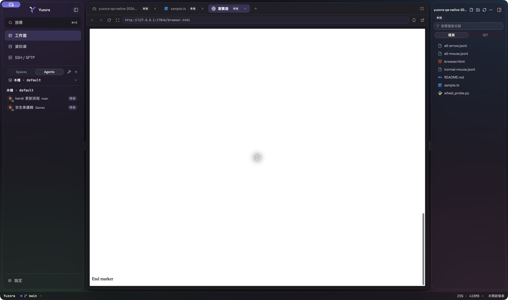
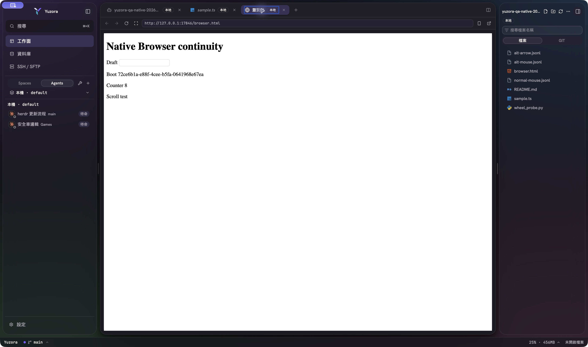

2026-10-06 · Apple Silicon macOS · HEAD 9f4592e。
驗收結果：部分通過，不能宣告全部修正完成。前端與 Rust build、最新自動回歸及多項 GUI 情境通過；原生 Browser 在切換編輯器分頁後仍會遺失草稿與捲動位置。另一個聊天在同一工作區持續實作安全修復，因此各階段證據必須保留其版本與時間範圍。
本機 main 與即時查詢的遠端 main 均為 9f4592ecd6f4c2bd3ff2cf544664b6c31225454c，沒有本分支尚未推送的 commit。開始時有 479 個未提交檔案項目：221 個 tracked 修改／刪除、258 個 untracked 檔案（含 vendored Rust 套件與證據資產）。涵蓋 dependency、CI／release、編輯器、HERDR、SSH/SFTP、Host/filesystem/watch/search、資料庫、Browser 與文件。
完整初始清單 · tracked 差異統計 · 機器可讀摘要。本輪沒有修改產品實作、沒有 stage／commit／push。
| 檢查 | 最後一次結果 | 證據 |
|---|---|---|
| 前端完整 suite | 290 檔，3,562 passed，34 skipped | log |
| Typecheck + production frontend build | 通過；保留 chunk size 與 plugin timing 提示 | log |
| Lint | 0 errors，49 warnings | log |
| Rust 桌面 build | cargo +1.98.1 build --locked 成功，已啟動產物 | log |
| Rust App tests | 452 unit + 2 integration；21 個 ignored 項目另列，未標通過 | log |
| Rust Host tests | 483 unit + 13 integration；11 ignored | log |
| Rust all-target check / fmt / Clippy | 通過；Clippy exact baseline 19 diagnostics | Clippy |
| Release contracts | version / Stable updater / Beta prerelease 通過 | 對应 logs 位於 evidence 目錄 |
| site-remotion / cm6-perf | Remotion lint + bundle、cm6-perf Vite build 通過 | 對应 logs 位於 evidence 目錄 |
| 完整安裝包 | 未完成：runtime gate 缺少 Windows host target payload 與 manifest；沒有略過 gate 製作正式安裝包 | runtime gate |
環境：Bun 1.4.2、Node 25.8.1、最終 Rust 使用 1.98.1。Node 未符合 .node-version 的 24.21.0，也不在 package engines 支援範圍；本次不能取代固定 Node 版本 CI。Rust 最後一輪使用 --test-threads=1。最初 Host 並行 suite 的 FD 計數／watcher timeout 兩項失敗，單獨重跑及完整序列 suite 都通過；保留為測試隔離／時序風險。
實際啟動 /tmp/Yuzora Dev Test.app，executable 指向本工作區 src-tauri/target/debug/yuzora；AX URL 為 localhost:1420/。這是重建的開發版，沒有替換 /Applications 內的安裝版。設定頁確認 GUI 的有效 HERDR client/server 為 0.9.1 / 0.9.1、protocol 22；沒有切換使用者來源設定。
| 情境 | 結果 |
|---|---|
| 檔名搜尋 | HerdrTerminalPage 回傳兩個檔案，開啟真實 TSX，語言辨識正確。 |
| Fullscreen SGR mouse | 零 host history，上／下收到 ESC[<64;1;22M / ESC[<65;1;22M。 |
| Normal-buffer + 300 行 history + SGR mouse | Host scrollbar 保持 250，child 正確收到上下 SGR report。 |
| Alternate screen + alternate-scroll | 零 host history，上／下收到 ESC[A / ESC[B。 |
| Terminal → 程式檔 → Terminal | 原程式繼續，event count 2 → 3，仍收到 ESC[A。 |
| 程式檔選取／捲動／儲存 | 1,000 行 fixture 到末尾，選取最後一個「5」，切檔再返回、以鍵盤重新聚焦後仍選取「5」。改為 X 並儲存後，磁碟末行精確為 // NATIVE-CURSOR-1234X；仍停在文件末端。 |
| Markdown 模式 | 原始碼模式經切檔往返仍保留。原生富文字選取未獨立完成精確驗收；其瀏覽器 fixture 結果另列。 |
| Browser 分頁連續性 | 失敗，詳見下節。 |
僅使用自建本機 HTTP fixture。輸入草稿、捲到底 → 切 sample.ts → 返回 Browser；沒有按重新整理或關閉 Browser。
| 觀察 | 切換前 | 切換後 |
|---|---|---|
| Boot ID | 46791d95-e55c-4a1e-b56a-73f0347df353 | 72ce6b1a-e88f-4cee-b5fa-0641968e67ea |
| Draft | QA-NATIVE-DRAFT-20261006 | 空白 |
| Scrollbar | 1（底部） | 0（頂部） |
| Counter | 16 | 新實例 8 |
這與 2026-10-02 的既有診斷一致；本次補上當前重建桌面版的再現證據，沒有將它歸因於效能優化或安全修復。


隔離的 HERDR 0.9.3 runtime contract 通過 schema、snapshot、live events、observer/controller、輸入、resize、排序與歷史捲動。使用本輪重建 helper 的原生 PTY E2E 10 項斷言通過，包括官方 client、Copy/OSC52、Kitty payload、plugin popup/pane、client 關閉後保留 server/pane，以及重連。此項沒有以 0.9.3 GUI 取代 0.9.1 GUI 證據。E2E 結果。
既有 112 筆實驗包含 73 次保留、38 次撤回、1 次量測修正。本輪重跑整體 functional regression 與五個精確生命週期案例，共 700 次量測循環；涵蓋 conflict editor、HERDR scope、workspace groups、FileTree Git 訂閱、remote notifications。資源釋放斷言通過。這些是 component/store/native fixture 的契約驗證，沒有重做 73 項完整 A/B，也沒有全 App CPU／RAM 改善百分比或無洩漏結論。瀏覽器虛擬化證據只支持對應渲染情境。本輪生命週期命令 · 既有完整效能報告。
| 實驗 | 範圍 | 本輪界線 |
|---|---|---|
| 1 | HERDR snapshot normalization | 既有保留決策；本輪執行整體回歸，未逐項重做 A/B 效能量測 |
| 2 | diagnostics/terminal lifetime | 既有保留決策；本輪執行整體回歸，未逐項重做 A/B 效能量測 |
| 3 | background diagnostics slow IPC and unmount | 既有保留決策；本輪執行整體回歸，未逐項重做 A/B 效能量測 |
| 4 | terminal UTF-8 accounting | 既有保留決策；本輪執行整體回歸，未逐項重做 A/B 效能量測 |
| 6 | file tree relisting/pruning | 既有保留決策；本輪執行整體回歸，未逐項重做 A/B 效能量測 |
| 8 | editor cross-workspace generation metadata | 既有保留決策；本輪執行整體回歸，未逐項重做 A/B 效能量測 |
| 10 | Native host/helper frame reader CPU and local socket lifecycle | 既有保留決策；本輪執行整體回歸，未逐項重做 A/B 效能量測 |
| 11 | HERDR native local socket NDJSON prefix scanning | 既有保留決策；本輪執行整體回歸，未逐項重做 A/B 效能量測 |
| 12 | Native database row ingestion accounting | 既有保留決策；本輪執行整體回歸，未逐項重做 A/B 效能量測 |
| 13 | Browser preview close/replacement queue | 既有保留決策；本輪執行整體回歸，未逐項重做 A/B 效能量測 |
| 14 | Native query-result pre-insertion budget projection | 既有保留決策；本輪執行整體回歸，未逐項重做 A/B 效能量測 |
| 17 | Single ASCII terminal input byte counting | 既有保留決策；本輪執行整體回歸，未逐項重做 A/B 效能量測 |
| 18 | Editor dirty notifications and session persistence | 既有保留決策；本輪執行整體回歸，未逐項重做 A/B 效能量測 |
| 19 | Native stream write cancellation and normal transfer CPU | 既有保留決策；本輪執行整體回歸，未逐項重做 A/B 效能量測 |
| 20 | Cancelled helper file-name search work | 既有保留決策；本輪執行整體回歸，未逐項重做 A/B 效能量測 |
| 22 | Bounded process completion wakeup | 既有保留決策；本輪執行整體回歸，未逐項重做 A/B 效能量測 |
| 23 | SSH view changes and helper health checks | 既有保留決策；本輪執行整體回歸，未逐項重做 A/B 效能量測 |
| 24 | Native filesystem watcher idle waiting and shutdown | 既有保留決策；本輪執行整體回歸，未逐項重做 A/B 效能量測 |
| 25 | Remote filesystem notification expansion | 既有保留決策；本輪執行整體回歸，未逐項重做 A/B 效能量測 |
| 26 | Obsolete remote reconnect reads | 既有保留決策；本輪執行整體回歸，未逐項重做 A/B 效能量測 |
| 28 | SFTP revision OPEN lifetime | 既有保留決策；本輪執行整體回歸，未逐項重做 A/B 效能量測 |
| 30 | HERDR page reconciliation split references | 既有保留決策；本輪執行整體回歸，未逐項重做 A/B 效能量測 |
| 31 | HERDR worktree scope equality | 既有保留決策；本輪執行整體回歸，未逐項重做 A/B 效能量測 |
| 32 | Editor conflict decoration update | 既有保留決策；本輪執行整體回歸，未逐項重做 A/B 效能量測 |
| 33 | Native Unix HERDR event subscription idle and release | 既有保留決策；本輪執行整體回歸，未逐項重做 A/B 效能量測 |
| 34 | FileTree Git projection, repository scope and subscription lifetime | 既有保留決策；本輪執行整體回歸，未逐項重做 A/B 效能量測 |
| 35 | Markdown editor/preview scroll-sync anchor lookup | 既有保留決策；本輪執行整體回歸，未逐項重做 A/B 效能量測 |
| 36 | Browser preview iframe shortcut bridge lifetime and polling | 既有保留決策；本輪執行整體回歸，未逐項重做 A/B 效能量測 |
| 38 | SSH channel-open cancellation lifetime | 既有保留決策；本輪執行整體回歸，未逐項重做 A/B 效能量測 |
| 39 | SSH rejected-open authentication reply retention | 既有保留決策；本輪執行整體回歸，未逐項重做 A/B 效能量測 |
| 40 | Database visible result rows and cell hints | 既有保留決策；本輪執行整體回歸，未逐項重做 A/B 效能量測 |
| 41 | Git diff header line-count statistics | 既有保留決策；本輪執行整體回歸，未逐項重做 A/B 效能量測 |
| 42 | Native Host directory JSON result ownership | 既有保留決策；本輪執行整體回歸，未逐項重做 A/B 效能量測 |
| 43 | Native Host directory sorting before JSON construction | 既有保留決策；本輪執行整體回歸，未逐項重做 A/B 效能量測 |
| 44 | Host/SFTP content classification and owned Host reads | 既有保留決策；本輪執行整體回歸，未逐項重做 A/B 效能量測 |
| 46 | Host bounded file-read allocation | 既有保留決策；本輪執行整體回歸，未逐項重做 A/B 效能量測 |
| 49 | Native database binary-value conversion and shared lowercase hexadecimal encoding | 既有保留決策；本輪執行整體回歸，未逐項重做 A/B 效能量測 |
| 50 | SFTP directory sorting and complete owned listing flow | 既有保留決策；本輪執行整體回歸，未逐項重做 A/B 效能量測 |
| 51 | SFTP directory ownership on errors and cancelled futures | 既有保留決策；本輪執行整體回歸，未逐項重做 A/B 效能量測 |
| 52 | SFTP file close acknowledgement and local handle capacity | 既有保留決策；本輪執行整體回歸，未逐項重做 A/B 效能量測 |
| 53 | Unclaimed SFTP HANDLE reply lifetime | 既有保留決策；本輪執行整體回歸，未逐項重做 A/B 效能量測 |
| 54 | SFTP directory packet accumulation | 既有保留決策；本輪執行整體回歸，未逐項重做 A/B 效能量測 |
| 57 | SFTP CLOSE acknowledgement accounting | 既有保留決策；本輪執行整體回歸，未逐項重做 A/B 效能量測 |
| 58 | Workspace-session pinned-path membership during cross-feature store updates | 既有保留決策；本輪執行整體回歸，未逐項重做 A/B 效能量測 |
| 59 | Workspace document ownership across metadata/focus/structural updates | 既有保留決策；本輪執行整體回歸，未逐項重做 A/B 效能量測 |
| 61 | macOS database helper resident-memory watchdog | 既有保留決策；本輪執行整體回歸，未逐項重做 A/B 效能量測 |
| 62 | Native database result-session membership with other cached pages | 既有保留決策；本輪執行整體回歸，未逐項重做 A/B 效能量測 |
| 63 | Hidden terminal incremental-output eviction | 既有保留決策；本輪執行整體回歸，未逐項重做 A/B 效能量測 |
| 64 | Local file-tree directory listing backend | 既有保留決策；本輪執行整體回歸，未逐項重做 A/B 效能量測 |
| 67 | Settled Browser acquisition queue result lifetime | 既有保留決策；本輪執行整體回歸，未逐項重做 A/B 效能量測 |
| 71 | Database paging completion notifications | 既有保留決策；本輪執行整體回歸，未逐項重做 A/B 效能量測 |
| 72 | Consecutive SQL history deduplication notifications | 既有保留決策；本輪執行整體回歸，未逐項重做 A/B 效能量測 |
| 73 | SFTP frontend lifetime after saved SSH host removal or identity replacement | 既有保留決策；本輪執行整體回歸，未逐項重做 A/B 效能量測 |
| 75 | Stale database paging response notifications | 既有保留決策；本輪執行整體回歸，未逐項重做 A/B 效能量測 |
| 77 | Shared path prefix recognition during file-event/editor planning | 既有保留決策；本輪執行整體回歸，未逐項重做 A/B 效能量測 |
| 81 | HERDR terminal event-subscription ownership | 既有保留決策；本輪執行整體回歸，未逐項重做 A/B 效能量測 |
| 82 | Host IPC queued and in-flight request buffer lifetime | 既有保留決策；本輪執行整體回歸，未逐項重做 A/B 效能量測 |
| 85 | Native Host tunnel admission and Browser/DB cross-owner lifecycle | 既有保留決策；本輪執行整體回歸，未逐項重做 A/B 效能量測 |
| 87 | Agent label sorting and command palette interactions | 既有保留決策；本輪執行整體回歸，未逐項重做 A/B 效能量測 |
| 89 | Native database result ingestion, capacity projection and resource lifecycle | 既有保留決策；本輪執行整體回歸，未逐項重做 A/B 效能量測 |
| 92 | Native log-query scan, filter and repeated resource lifetime | 既有保留決策；本輪執行整體回歸，未逐項重做 A/B 效能量測 |
| 93 | Terminal copy formatting, Markdown protection and worker resource lifecycle | 既有保留決策；本輪執行整體回歸，未逐項重做 A/B 效能量測 |
| 95 | Image editor error viewport and ResizeObserver resource lifetime | 既有保留決策；本輪執行整體回歸，未逐項重做 A/B 效能量測 |
| 96 | HERDR full-session Kitty renderer base64 byte materialization | 既有保留決策；本輪執行整體回歸，未逐項重做 A/B 效能量測 |
| 97 | Kitty unfinished-upload empty fragment retention and lifecycle | 既有保留決策；本輪執行整體回歸，未逐項重做 A/B 效能量測 |
| 98 | Editor minimap viewport interaction and language label refresh | 既有保留決策；本輪執行整體回歸，未逐項重做 A/B 效能量測 |
| 99 | Native database helper small-frame writes and request/child lifecycle | 既有保留決策；本輪執行整體回歸，未逐項重做 A/B 效能量測 |
| 101 | Current native Git log/detail commit object headers | 既有保留決策；本輪執行整體回歸，未逐項重做 A/B 效能量測 |
| 102 | Cached editor grammar reconfiguration and editor/diff lifecycle | 既有保留決策；本輪執行整體回歸，未逐項重做 A/B 效能量測 |
| 104 | Host terminal stream JSON frame capacity | 既有保留決策；本輪執行整體回歸，未逐項重做 A/B 效能量測 |
| 106 | Browser bounds operation queue | 既有保留決策；本輪執行整體回歸，未逐項重做 A/B 效能量測 |
| 107 | Browser error viewport observer lifetime | 既有保留決策；本輪執行整體回歸，未逐項重做 A/B 效能量測 |
| 109 | HERDR native dialog clipboard byte materialization | 既有保留決策；本輪執行整體回歸，未逐項重做 A/B 效能量測 |
報告產生時間：2026-10-06T09:32:02.911802+08:00。證據保存在 .yuuzu/eval/worktree-qa-2026-10-06/。此報告是驗證結果，不是全部 bug 已修復或可發布的批准。